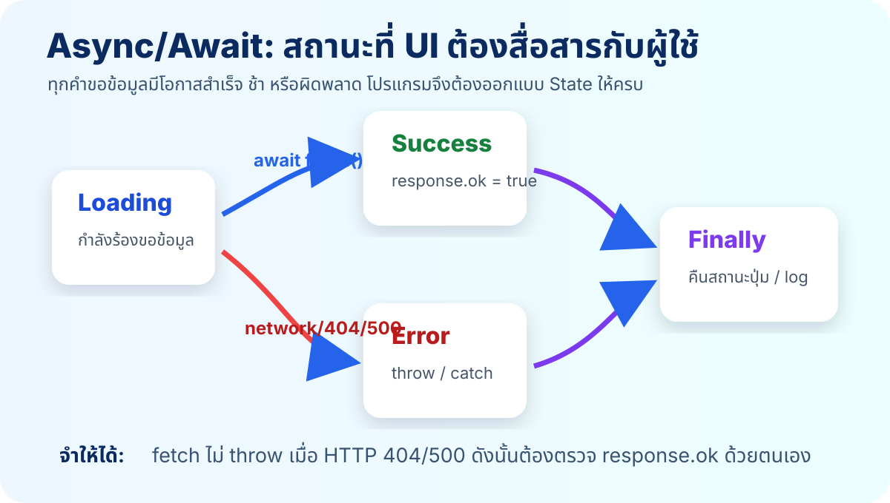
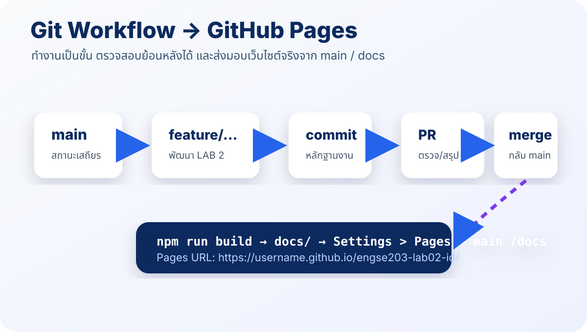
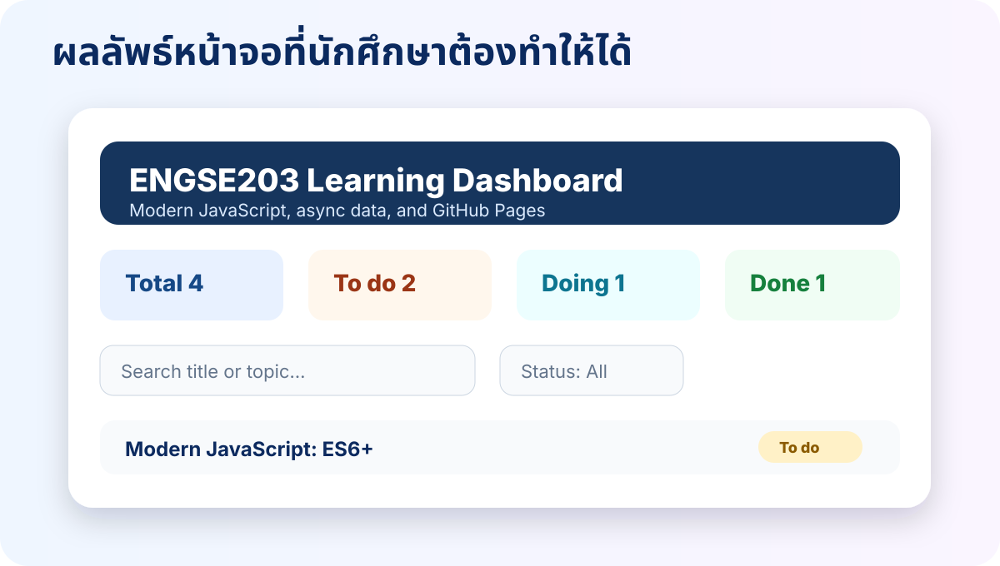

Teaching Pair
Slide หลัก: ใช้เล่าแนวคิด ลำดับงาน และข้อควรระวัง
Interactive Teaching Sandbox: ให้นักศึกษากดทดลองและฝึกทีละหัวข้อ
ES6+ • ES Modules • Async/Await • Error Handling • npm Scripts • Git Workflow • GitHub Pages

Slide หลัก: ใช้เล่าแนวคิด ลำดับงาน และข้อควรระวัง
Interactive Teaching Sandbox: ให้นักศึกษากดทดลองและฝึกทีละหัวข้อ
ใช้ const/let, destructuring, spread/rest, arrow function และ array method เพื่อเขียนโค้ดที่อ่านง่ายและลดงานซ้ำ
จัดโครงสร้างโปรแกรมขนาดย่อมเป็น ES Modules และใช้ import/export ได้ถูกต้อง
อธิบาย Promise, fetch และ async/await ในเว็บแอปพลิเคชันได้
ตรวจ response.ok และจัดการ loading/success/error ด้วย try/catch/finally ได้
กำหนด npm scripts และใช้ Vite เพื่อ dev/build/preview/check ได้
ใช้ feature branch, meaningful commit, PR และ GitHub Pages เพื่อส่งมอบงานได้
เข้าใจ DOM, event, basic logic
ES Modules, async data, Vite, GitHub Pages
Component, State, Props, JSX, Build Tool

“อย่าเขียนโค้ดให้แค่เครื่องเข้าใจ แต่ต้องให้เพื่อนร่วมทีมเข้าใจด้วย”
ENGSE203 จึงเน้น coding style ที่ขยายต่อได้ ไม่ใช่แค่ output ถูกต้อง
const course = "ENGSE203";
let selectedStatus = "all";
if (selectedStatus === "all") {
const message = "show every task";
console.log(message);
}
// console.log(message); // error: block scopeconst task = {
title: "ES Modules",
status: "doing",
minutes: 60,
};
const { title, minutes } = task;
const message = `${title} ใช้เวลา ${minutes} นาที`;
console.log(message);ในเว็บแอป เรามักต้องเปลี่ยนเฉพาะบางส่วนของข้อมูล เช่น เปลี่ยน status แต่ไม่อยากแก้ object เดิมโดยตรง เพราะจะทำให้ debug ยากและกระทบส่วนอื่น
const task = { id: 1, title: "ES Modules", status: "todo" };
const updatedTask = {
...task,
status: "done",
};
console.log(task.status); // todo
console.log(updatedTask.status); // doneconst activeTasks = learningTasks
.filter(({ status }) => status !== "done")
.map((task) => ({ ...task, title: task.title.trim() }));
const totalMinutes = activeTasks.reduce(
(sum, { minutes }) => sum + minutes,
0,
);const learningTasks = [
{ title: " ES Modules ", status: "todo", minutes: 40 },
{ title: "async/await", status: "doing", minutes: 60 },
{ title: "GitHub Pages", status: "done", minutes: 30 },
];
// Goal: select active tasks and summarize minutesฟังก์ชันนี้รับข้อมูลอะไรเข้า และคืนข้อมูลอะไรออก?
ฟังก์ชันนี้ทำหน้าที่เดียวหรือรวมหลายเรื่องเกินไป?
มีการแก้ข้อมูลต้นฉบับโดยไม่จำเป็นหรือไม่?
ชื่อฟังก์ชัน ตัวแปร และ commit message สื่อความหมายหรือไม่?

รับผิดชอบการโหลดข้อมูล: fetch, ตรวจ response.ok, แปลง response.json()
ตรรกะที่ไม่ผูกกับ DOM: filter, sort, getStats, getStatusLabel
สร้าง UI จากข้อมูล: render card, render summary, message, empty state
เชื่อมทุกส่วน: state, event listener, loadDashboard, เรียก render
// src/utils.js
export function getStatusLabel(status) {
const labels = { todo: "To do", doing: "In progress", done: "Done" };
return labels[status] ?? "Unknown";
}
// src/main.js
import { getStatusLabel } from "./utils.js";
console.log(getStatusLabel("doing"));<!-- index.html -->
<script type="module" src="/src/main.js"></script>เลือก status แล้วดูว่า main.js เรียก getStatusLabel() จาก utils.js เพื่อแปลงค่าเป็นข้อความสำหรับ UI อย่างไร
Vite อ่านว่า “วีท” แปลว่า “รวดเร็ว” ในภาษาฝรั่งเศส เป็นเครื่องมือผู้ช่วยนักพัฒนาเว็บสมัยใหม่
ถ้าเขียน HTML/CSS/JS แบบเดิมเหมือนทำอาหารเองทุกขั้น Vite คือครัวสุดล้ำที่ช่วยเตรียม เสิร์ฟ และแพ็กเว็บให้พร้อมส่ง

เปิดเว็บในเครื่องระหว่างเขียนโค้ดผ่าน npm run dev
ได้ URL เช่น http://localhost:5173 และแก้ปัญหาการเปิดไฟล์ด้วย file://
รวมไฟล์ JS/CSS หลายไฟล์ให้เป็นไฟล์ production ผ่าน npm run build
ช่วย bundle, minify และจัด path ให้เหมาะกับการ deploy
ES Modules และ fetch ควรทำงานผ่าน local server ไม่ใช่ double-click index.html
แก้โค้ดแล้วหน้าเว็บเปลี่ยนทันที ลดเวลาทดลองระหว่างสอน
จัดการ import, CSS, assets และ module ได้สะดวกขึ้น
สร้างไฟล์ docs/ ที่พร้อม deploy บน GitHub Pages
ใน Vanilla JS แบบดั้งเดิม เบราว์เซอร์ไม่รู้จัก import "./style.css" โดยตรง แต่ Vite เข้าใจและนำ CSS ไปแทรกในหน้าเว็บให้ระหว่าง build
// src/main.js
import "./style.css";
import { fetchLearningTasks } from "./api.js";
import { renderTasks } from "./ui.js";
// Vite ช่วยจัดการ dependency เหล่านี้ระหว่าง dev/build| เรื่องที่ต้องเจอ | ใช้ Vite | ไม่ใช้ Vite |
|---|---|---|
| เปิดทดสอบในเครื่อง | npm run dev | ต้องใช้ Live Server หรือสร้าง server เอง |
| import CSS | import "./style.css" ได้ | ต้องใช้ <link> ใน HTML |
| Production Build | bundle/minify อัตโนมัติ | deploy ไฟล์ดิบ ต้องจัดการเอง |
| GitHub Pages path | ตั้ง base ใน config | ต้องไล่แก้ path เอง เสี่ยง 404 |

async function loadData() {
const response = await fetch("/data/learning-tasks.json");
const tasks = await response.json();
console.log(tasks);
}
loadData();
fetch() จะ resolve ได้แม้ server ตอบ 404 หรือ 500 ดังนั้นถ้าไม่ตรวจ response.ok โปรแกรมอาจเข้าใจผิดว่าโหลดสำเร็จ
const response = await fetch(url);
if (!response.ok) {
throw new Error(`Unable to load tasks (HTTP ${response.status})`);
}
return response.json();async function loadDashboard() {
try {
setMessage("loading", "กำลังโหลดข้อมูล...");
const tasks = await fetchLearningTasks();
renderDashboard(tasks);
setMessage("success", `โหลด ${tasks.length} รายการแล้ว`);
} catch (error) {
setMessage("error", `ไม่สามารถโหลดข้อมูลได้: ${error.message}`);
} finally {
console.log("Load attempt finished");
}
}{
"scripts": {
"dev": "vite",
"build": "vite build",
"preview": "vite preview",
"check": "node scripts/check-project.mjs"
}
}เปิด local development server สำหรับพัฒนา
หลักฐาน: URL local และภาพหน้าจอตรวจไฟล์สำคัญตาม checklist อัตโนมัติ
หลักฐาน: Project structure check passedสร้าง static files สำหรับเผยแพร่
หลักฐาน: docs/ และไม่มี build errorดู build output ในเครื่องก่อน deploy
หลักฐาน: production preview เปิดได้
feature/lab02-dashboard
แยกพื้นที่พัฒนาออกจาก main
feat: add async task loader
บอกสิ่งที่เปลี่ยน ไม่ใช่แค่ update/fix
สรุปฟีเจอร์ วิธีทดสอบ และ URL preview
ใช้เป็นหลักฐานการทบทวนงาน
docs/main /docsimport { defineConfig } from "vite";
export default defineConfig({
base: "/engse203-lab02-<student-id>/",
build: {
outDir: "docs",
emptyOutDir: true,
},
});/engse203-lab02-<student-id>/ ต้องมี slash ต้นและท้าย
ถ้าไม่มี build output Pages จะเปิดไม่ได้หรือขึ้น 404
ห้ามมี password, token, .env หรือข้อมูลส่วนบุคคลที่ไม่จำเป็น
เปิด URL ปกติและ ?simulateError=1 เพื่อเช็ค error state
| รายการ | iMac M1 / macOS | Windows 11 + WSL2 | แนวปฏิบัติร่วม |
|---|---|---|---|
| Terminal | VS Code Terminal (zsh) | VS Code Terminal ที่เป็น Ubuntu/WSL | ใช้ terminal ใน VS Code เป็นหลัก |
| พื้นที่ทำงาน | ~/Documents/ENGSE203 | ~/projects/ENGSE203 | ตั้งชื่อและเก็บงานสม่ำเสมอ |
| เปิด VS Code | code . | code . จาก Ubuntu WSL | Windows ให้ดูมุมล่างซ้ายว่าคือ WSL |
| เครื่องมือ | node, npm, git | node, npm, git ใน Ubuntu | ตรวจเวอร์ชันก่อนเริ่ม LAB |
node -v
npm -v
git --version
git config --global user.name
git config --global user.email
ssh -T git@github.com
engse203-lab02-<student-id>git clone git@github.com:<github-username>/engse203-lab02-<student-id>.git
cd engse203-lab02-<student-id>
git switch -c feature/lab02-dashboard
git statusใช้ Vite เป็น development server และ build tool เพื่อให้รันในเครื่องได้ง่าย สร้าง build output สำหรับ GitHub Pages ได้ และเตรียมความพร้อมสู่ React.js
npm create vite@latest . -- --template vanilla
npm install
npm run devengse203-lab02-<student-id>/
├── public/data/learning-tasks.json
├── scripts/check-project.mjs
├── src/
│ ├── api.js
│ ├── main.js
│ ├── style.css
│ ├── ui.js
│ └── utils.js
├── docs/
├── index.html
├── package.json
└── vite.config.jsผู้เรียนแก้ source code ที่ src/ และใช้ npm run build เพื่อสร้างไฟล์ deploy ที่ docs/
import { defineConfig } from "vite";
export default defineConfig({
// ชื่อต้องตรงกับ repository และมี / ทั้งต้นและท้าย
base: "/engse203-lab02-<student-id>/",
build: {
outDir: "docs",
emptyOutDir: true,
},
});[
{ "id": 1, "title": "Modern JavaScript: ES6+", "topic": "JavaScript", "status": "todo", "minutes": 45 },
{ "id": 2, "title": "ES Modules and import/export", "topic": "Architecture", "status": "doing", "minutes": 60 },
{ "id": 3, "title": "Async/Await and fetch", "topic": "JavaScript", "status": "todo", "minutes": 50 },
{ "id": 4, "title": "GitHub Pages deployment", "topic": "DevOps", "status": "done", "minutes": 30 }
]Task card บนหน้าเว็บต้องมาจาก public/data/learning-tasks.json ไม่ใช่เขียน HTML card ตายตัวทั้งหมด
export async function fetchLearningTasks({ simulateError = false } = {}) {
if (simulateError) {
throw new Error("Simulated error: data source is unavailable");
}
const url = `${import.meta.env.BASE_URL}data/learning-tasks.json`;
const response = await fetch(url);
if (!response.ok) {
throw new Error(`Unable to load tasks (HTTP ${response.status})`);
}
return response.json();
}simulateError ใช้ทดสอบ error stateimport.meta.env.BASE_URL ช่วยให้ path ทำงานกับ Vite/GitHub Pagesresponse.ok ป้องกันการเข้าใจผิดว่า 404/500 สำเร็จexport function getStats(tasks) {
return tasks.reduce(
(stats, { status }) => ({
...stats,
total: stats.total + 1,
[status]: (stats[status] ?? 0) + 1,
}),
{ total: 0, todo: 0, doing: 0, done: 0 },
);
}
export function filterTasks(tasks, { query, status }) {
const normalizedQuery = query.trim().toLowerCase();
return tasks.filter((task) => {
const matchesQuery = task.title.toLowerCase().includes(normalizedQuery) || task.topic.toLowerCase().includes(normalizedQuery);
const matchesStatus = status === "all" || task.status === status;
return matchesQuery && matchesStatus;
});
}ฟังก์ชันเหล่านี้ไม่ควรรู้จัก HTML หรือ DOM จึงทดสอบและแก้ไขได้ง่ายกว่า
export function renderTasks(element, tasks) {
if (tasks.length === 0) {
element.innerHTML = `<p class="empty-state">ไม่พบรายการที่ตรงกับเงื่อนไข</p>`;
return;
}
element.innerHTML = tasks
.map(({ id, title, topic, status, minutes }) => `
<article class="task-card" data-task-id="${id}">
<div><span class="tag">${topic}</span><h2>${title}</h2><p>${minutes} minutes</p></div>
<span class="status status--${status}">${getStatusLabel(status)}</span>
</article>
`)
.join("");
}const state = { tasks: [], query: "", status: "all" };
function render() {
const visibleTasks = filterTasks(state.tasks, state);
renderStats(elements.stats, getStats(state.tasks));
renderTasks(elements.taskList, visibleTasks);
}
async function loadDashboard() {
try {
setMessage(elements.message, "loading", "กำลังโหลดข้อมูล...");
state.tasks = await fetchLearningTasks({ simulateError: params.get("simulateError") === "1" });
render();
setMessage(elements.message, "success", `โหลด ${state.tasks.length} รายการแล้ว`);
} catch (error) {
elements.stats.innerHTML = "";
elements.taskList.innerHTML = "";
setMessage(elements.message, "error", `ไม่สามารถโหลดข้อมูลได้: ${error.message}`);
}
}main.js ไม่ควรมีรายละเอียด HTML card หรือ URL ของข้อมูลโดยตรง เพราะมอบให้ ui.js และ api.js รับผิดชอบแล้ว
<main class="container">
<header class="hero">
<p class="eyebrow">ENGSE203 • LAB 2</p>
<h1>Learning Dashboard</h1>
</header>
<p id="app-message" class="message" aria-live="polite"></p>
<section id="stats" class="stats"></section>
<section class="controls">
<input id="search" type="search" placeholder="Search title or topic" />
<select id="status-filter">...</select>
</section>
<section id="task-list" class="task-list"></section>
</main>
<script type="module" src="/src/main.js"></script>import { existsSync } from "node:fs";
const requiredFiles = [
"index.html",
"vite.config.js",
"src/api.js",
"src/main.js",
"src/ui.js",
"src/utils.js",
"src/style.css",
"public/data/learning-tasks.json",
];
const missing = requiredFiles.filter((file) => !existsSync(file));
if (missing.length > 0) process.exit(1);
console.log("Project structure check passed.");npm run check
npm run dev
# open http://localhost:5173
# test: http://localhost:5173/?simulateError=1
npm run build
npm run previewgit status
git add .
git commit -m "feat: build async learning dashboard"
git push -u origin feature/lab02-dashboard
# GitHub: Compare & pull request
# Merge to main
git switch main
git pull origin main
npm run check
npm run build
git add docs vite.config.js
git commit -m "build: prepare GitHub Pages output"
git push origin mainRepository → Settings → Pages → Source: Deploy from a branch → Branch: main → Folder: /docs → Save
ชื่อ LAB, ชื่อ/รหัสนักศึกษา และเป้าหมายของ Learning Dashboard
ES Modules, async JSON loading, search/filter, stats, loading/error state
npm install, npm run dev, npm run check, npm run build, npm run preview
GitHub Pages URL
ผลทดสอบ normal state และ ?simulateError=1 พร้อมภาพหน้าจอ
แหล่งอ้างอิง และถ้าใช้ AI ต้องระบุบทบาทและสิ่งที่ตรวจสอบเอง
ประเภทงาน: รายบุคคล | คะแนนย่อย: 3 คะแนน | CLO: CLO1, CLO2
engse203-lab02-<student-id>| เกณฑ์ | หลักฐานที่ต้องเห็น | คะแนน |
|---|---|---|
| Modern JavaScript & ES Modules | ใช้ ES6+ เหมาะสม แยก api/utils/ui/main และ import/export ถูกต้อง | 0.80 |
| Async/Await & Error Handling | โหลด JSON ด้วย fetch, ตรวจ response.ok, มี loading/success/error UI | 0.80 |
| npm Scripts & Build | dev/build/preview/check สำเร็จ และ docs/ อยู่ใน main | 0.40 |
| Git Workflow | มี feature branch, meaningful commits, PR และ merge | 0.50 |
| GitHub Pages & Documentation | Pages URL ทำงาน README ครบและมีหลักฐานทดสอบ | 0.50 |
| รวม | 3.00 |
| อาการ | สาเหตุที่เป็นไปได้ | แนวทางแก้ |
|---|---|---|
| npm command not found | ยังไม่ได้ติดตั้ง Node/npm ใน shell ที่ใช้ | Windows ให้เปิด terminal เป็น WSL Ubuntu และตรวจ path |
| Vite เปิดได้แต่ JSON ไม่โหลด | path ไม่ถูก หรือเปิด index.html ด้วย file:// | ใช้ npm run dev และ import.meta.env.BASE_URL |
| GitHub Pages 404 / asset หาย | base path ไม่ตรงชื่อ repo หรือไม่มี docs/ | แก้ vite.config.js, build ใหม่, commit/push docs/ |
| import error | script ไม่มี type=module หรือ import path ผิด | ตรวจ <script type="module"> และ relative import |
| node_modules โผล่ใน git status | .gitignore ไม่ครอบคลุมหรือ add ไปแล้ว | เพิ่ม node_modules/ และใช้ git rm -r --cached node_modules |
ES6+, Modules, Vite, async/error
Repo, branch, Vite project, terminal check
JSON, api.js, utils.js
ui.js, main.js, HTML/CSS, search/filter
error state + screenshot evidence
check, build, commit, PR, deploy Pages
rubric, submit URLs, common issues, next week React.js
ทำไม main.js ไม่ควรมีทุกอย่างอยู่ในไฟล์เดียว?
ทำไม fetch ต้องตรวจ response.ok?
Vite ช่วยอะไรในช่วง dev และ build?
GitHub Pages ใช้ main /docs แล้ว base path ต้องตั้งอย่างไร?